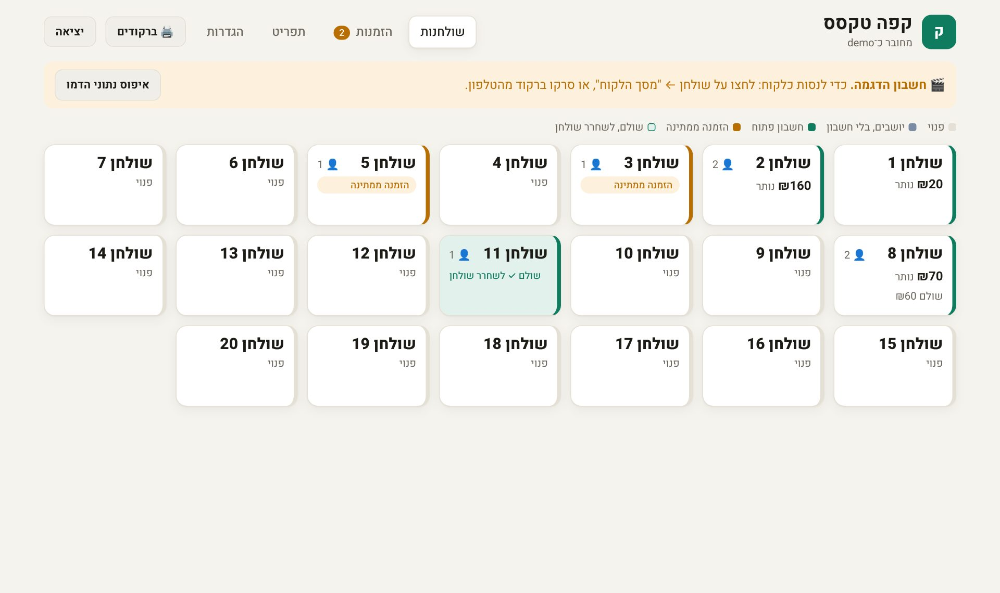
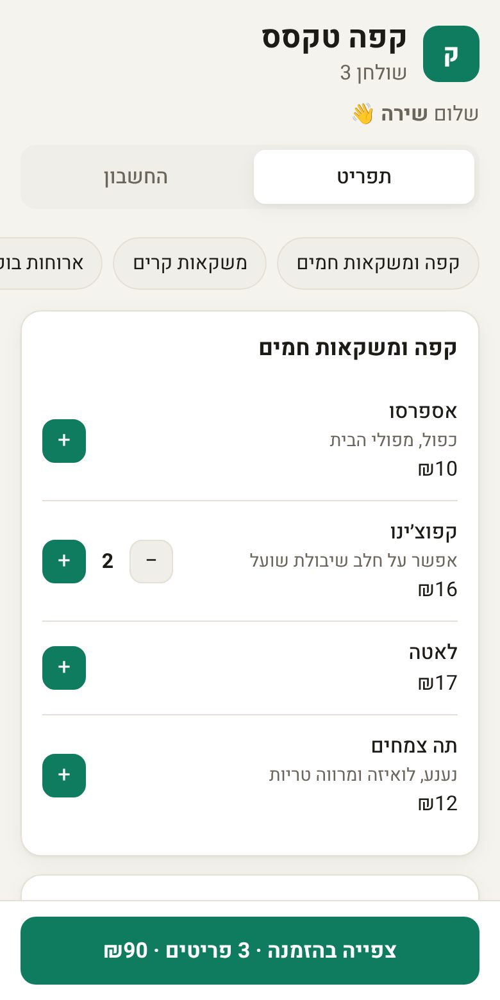
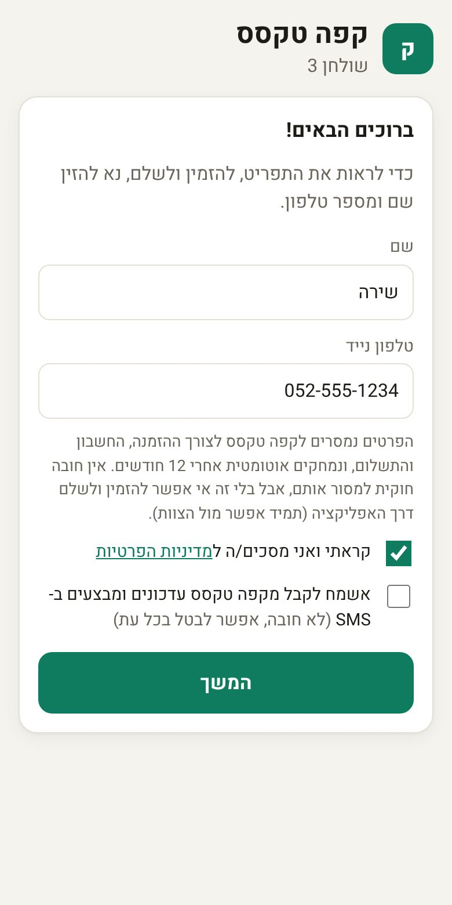
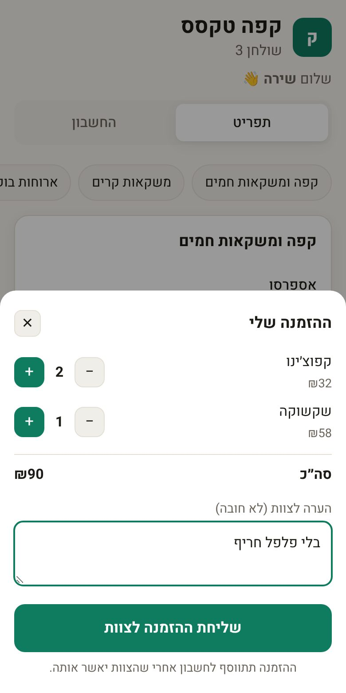
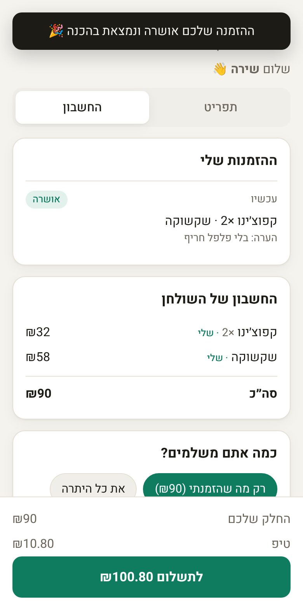
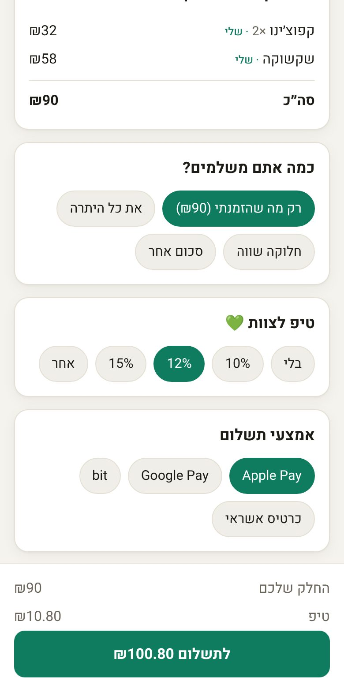
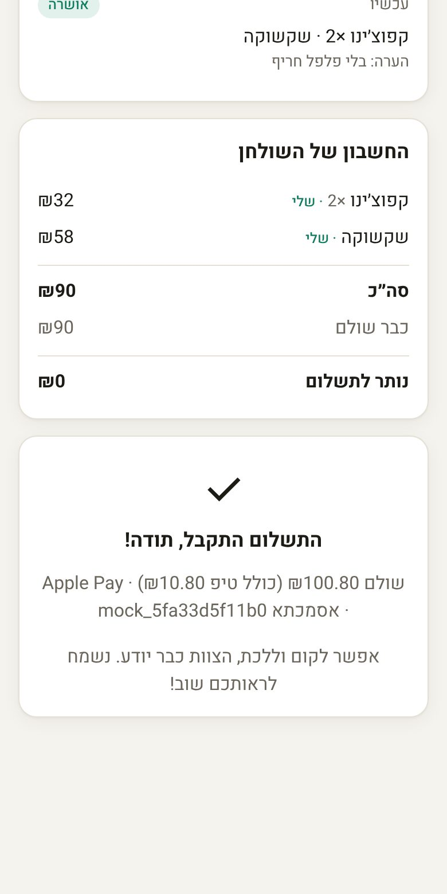
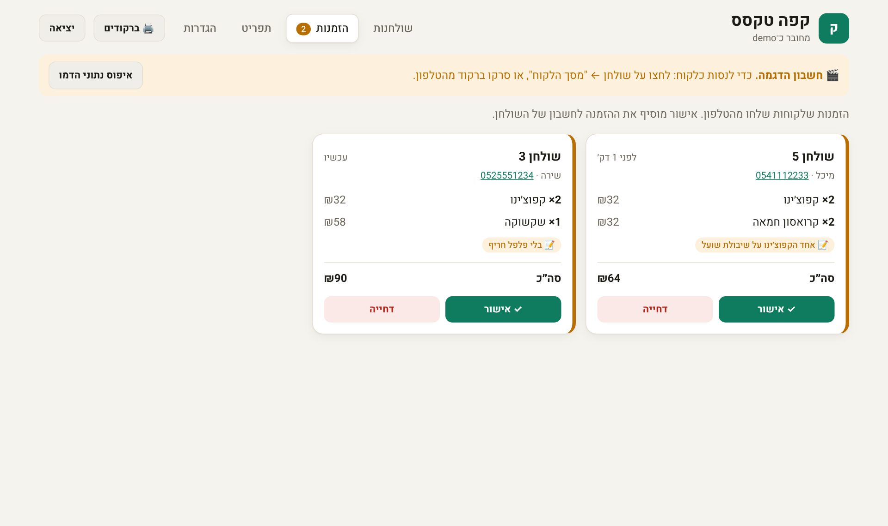
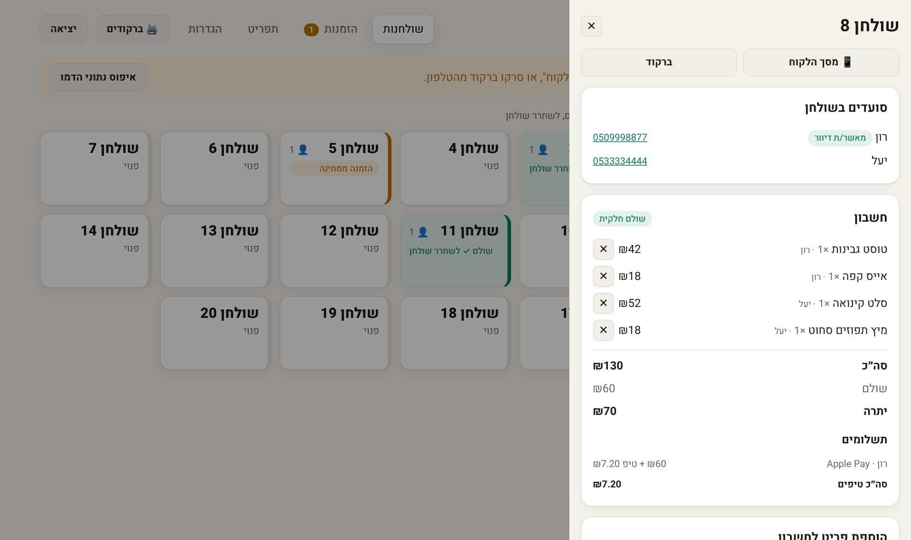
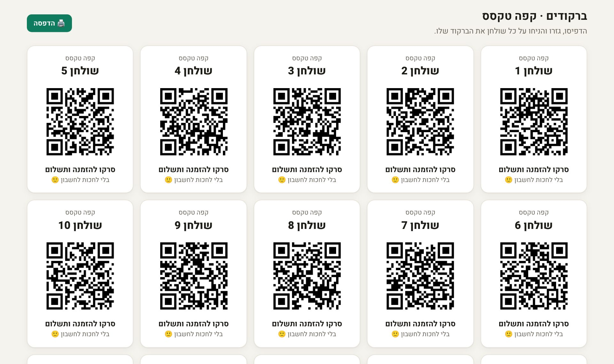

מערכת לבתי קפה ומסעדות. לכל שולחן יש ברקוד: הלקוח רואה את התפריט, שולח הזמנה שהצוות מאשר בלחיצה, ובסוף משלם את החלק שלו ומשאיר טיפ. הכול מהטלפון, בלי להוריד אפליקציה ובלי לחכות למלצר.


זה מה שהלקוח רואה אחרי שסרק את הברקוד בשולחן 3 של "קפה טקסס", מסעדת ההדגמה.
החליקו לצדדים כדי לראות את כל השלבים ←

שם וטלפון נייד, ואישור מדיניות הפרטיות. בלי זה לא רואים את התפריט.
קטגוריות, תיאורים ומחירים. פריט שאזל מסומן ולא ניתן להזמנה.

אפשר להוסיף הערה, כמו "בלי פלפל חריף". ההזמנה עוברת לצוות לאישור.

הלקוח מקבל הודעה, וההזמנה נכנסת לחשבון של השולחן ומסומנת "שלי".

רק מה שהזמנתי, חלוקה שווה, כל החשבון או סכום אחר. ועוד טיפ, ב-10%, 12%, 15% או כל סכום.

אישור עם אסמכתא. הצוות רואה מיד שהשולחן שילם.
עובד על מחשב, טאבלט או טלפון של מלצר. מתעדכן לבד כל כמה שניות.
כל שולחן בצבע לפי המצב שלו, כך שבמבט אחד רואים מה דורש טיפול.

הזמנה חדשה מגיעה עם צליל. רואים מי הזמין, מאיזה שולחן, מה ההערה, ומאשרים או דוחים בלחיצה.

מי יושב בשולחן ואיך ליצור איתו קשר, מה כל אחד הזמין, מי כבר שילם וכמה טיפ השאיר.

כל מסעדה שנרשמת מקבלת ברקוד ייחודי לכל שולחן, בדף אחד להדפסה ולגזירה.
כל מסעדה פותחת חשבון עם שם משתמש וסיסמה ורואה רק את הנתונים שלה.
הוספה, עריכה ומחיקה של פריטים, וסימון "אזל" שמונע הזמנה של אותו פריט.
מקום שלא רוצה הזמנות דרך האפליקציה מכבה אותן, והלקוחות רק רואים את החשבון ומשלמים.
כמה אנשים משלמים במקביל, והיתרה מתעדכנת לכולם. אי אפשר לשלם יותר ממה שנשאר.
מדיניות פרטיות, הסכמה נפרדת לדיוור, מחיקה אוטומטית אחרי 12 חודשים, ומחיקה לפי בקשת לקוח.
"קפה טקסס" עם 20 שולחנות ומשמרת פעילה, וכפתור שמאפס אותה לפני כל פגישה.